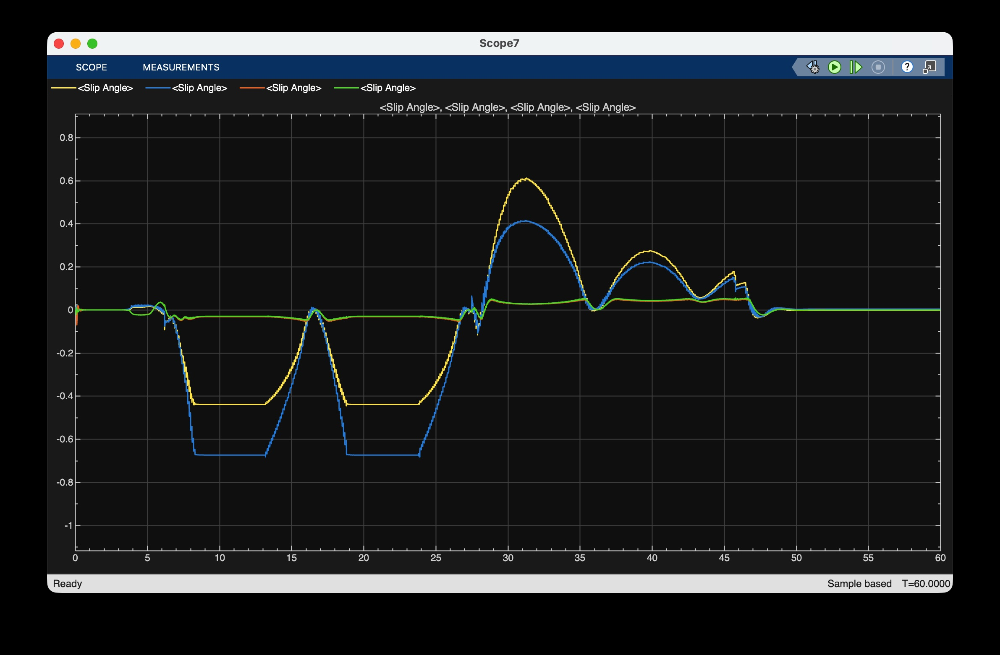
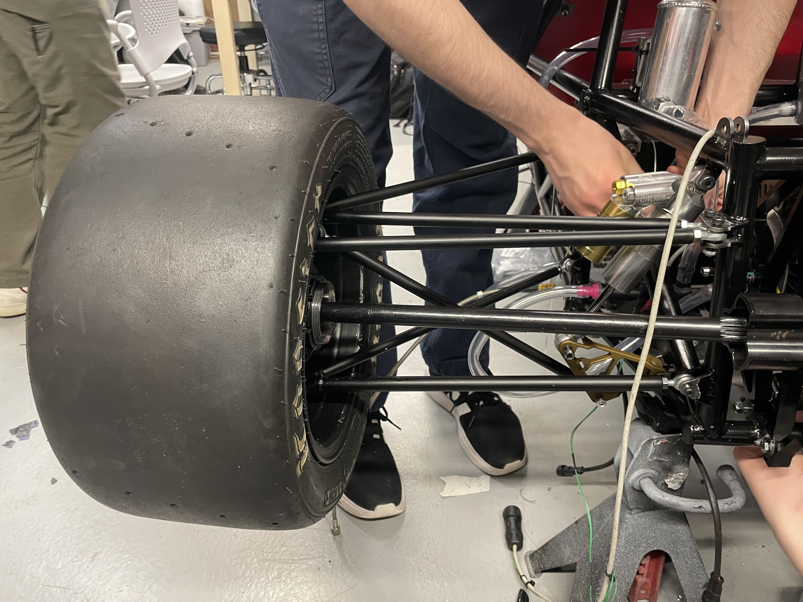
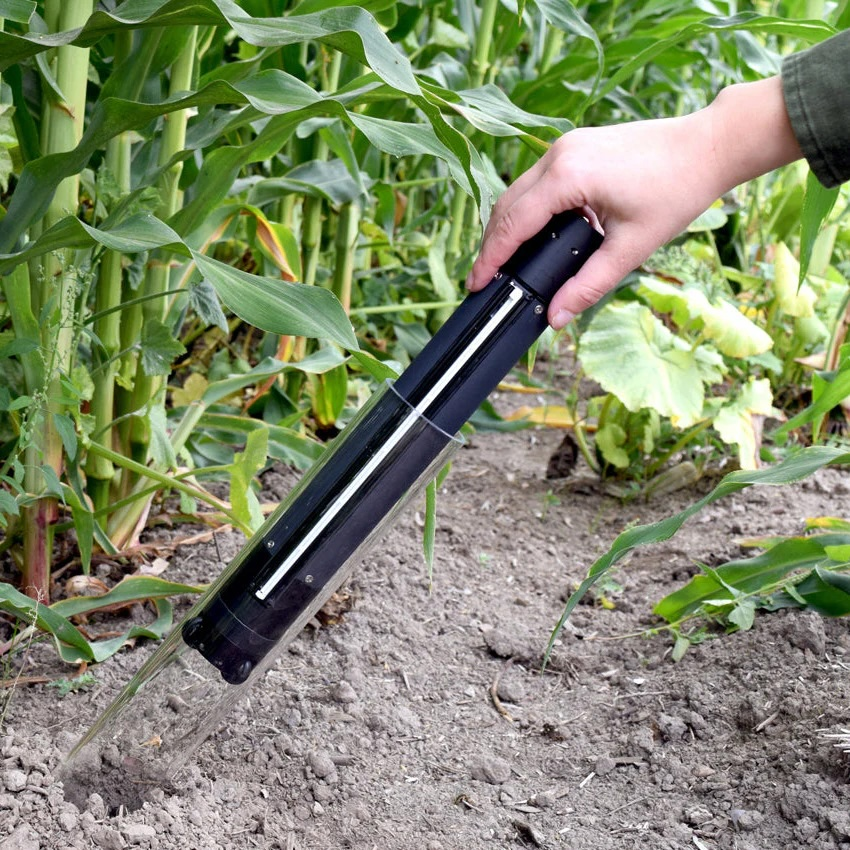
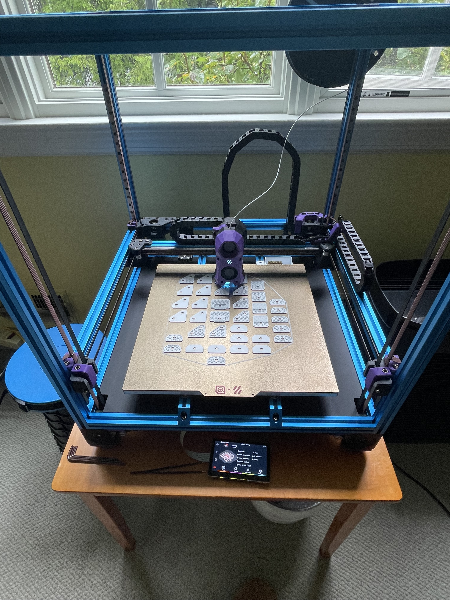
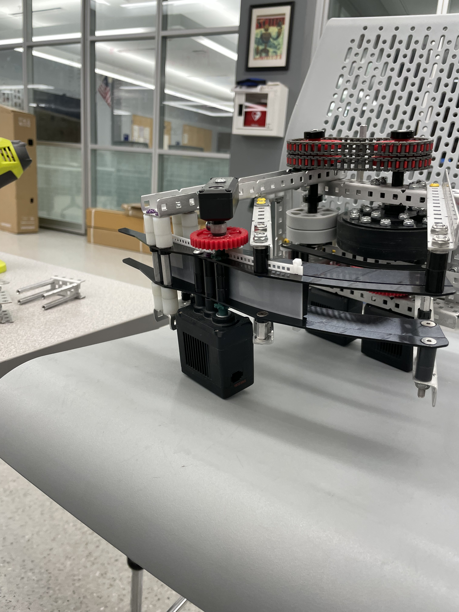
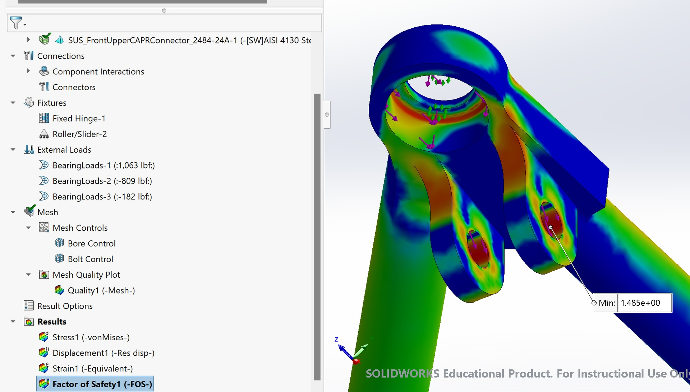
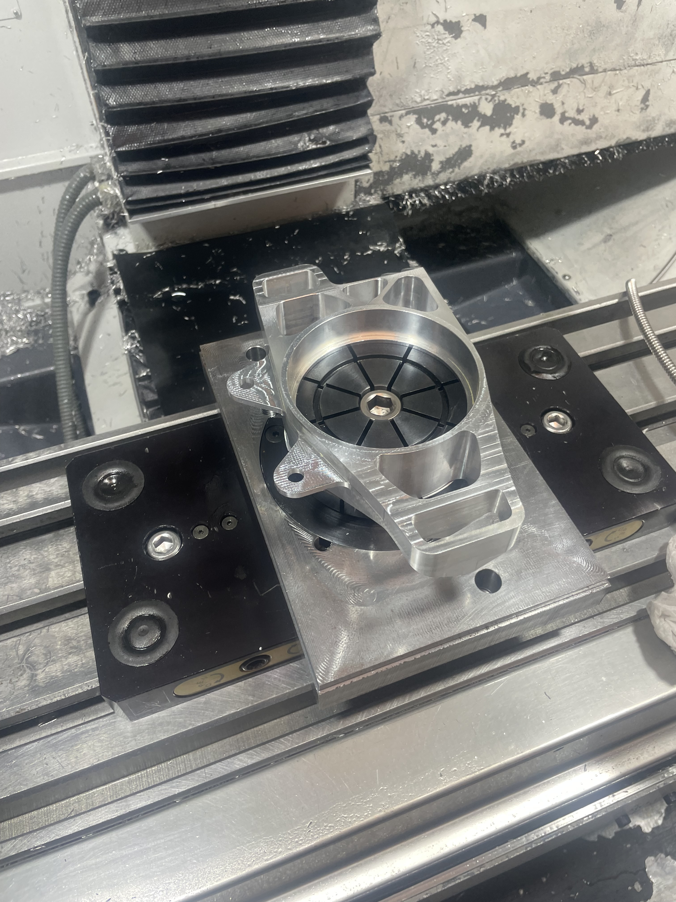

Selected Projects
A selection of engineering work spanning mechanical design, simulation, prototyping, fabrication, and testing. Each card opens a dedicated project page with more technical detail.
Quadratic3D
Precision actuator design, centrifuge-loaded glass validation, thermal enclosure modeling, optical stabilization, and CNC manufacturing.

Formula SAE Vehicle Simulation
Full-vehicle dynamics modeling in Simulink and Simscape Multibody for suspension, aero, tire, powertrain, and closed-loop driver behavior.

Electric Racing Suspension Design
Lightweighted the suspension, defined geometry targets, created welding fixtures, and validated 49 components with FEA and GD&T.

Agricultural Robotics Research
Designed a field-ready robotic probe for subsurface root structure sensing with watertight sealing, solar-powered operation, and differential linear/rotational motion.

Voron FDM Printer Build
Designed a custom FDM printer with differential CoreXY motion, 4-motor Z gantry, bed-mesh compensation, and integrated controls hardware.

VEX Robotics Competition
Iteratively designed a competition robot for VEX Spin Up, balancing turreted shooting, drivetrain performance, odometry, autonomous consistency, and endgame expansion systems.
Technical Capabilities
Separate capability pages for the software, analysis, manufacturing, and fabrication tools that support the project work above.

Software & Analysis
CAD, multibody simulation, FEA, controls-oriented modeling, and scripting tools used to evaluate designs before they reach hardware.

Manufacturing & Fabrication
CNC machining, welding, prototyping, inspection, and fabrication workflows used to turn designs into validated hardware.
About
Victor Dong is a Boston-based mechanical engineering and physics student at Northeastern University with experience spanning race car systems, precision mechanism design, thermal and structural analysis, and hands-on fabrication.
His portfolio emphasizes measurable outcomes, technical rigor, and the ability to move between simulation, design, manufacturing, and physical validation.
Contact
Ready for internships, research, and engineering roles where modeling, mechanical design, and prototyping intersect.
Boston, MA · (973) 868-0504